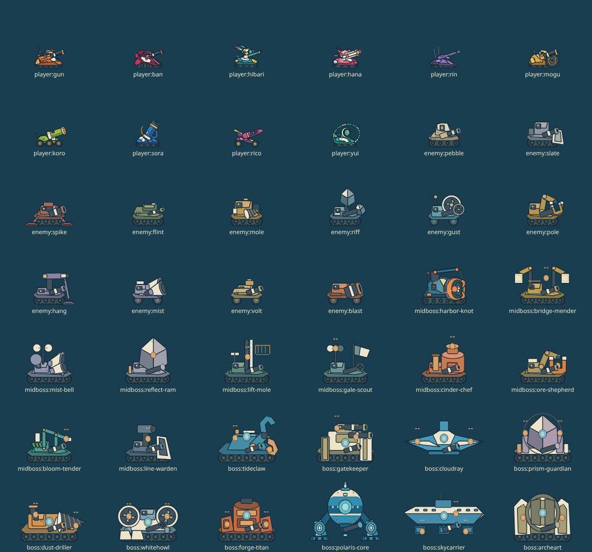

A01 弾道と着弾の表現
形・塗りをマットに統一。軌跡3px、発光芯5.5/8/10px、弾体サイズ、着弾半径18+76*ease、寿命・粒子の移動距離は0.10のまま。威力用半径と描画用半径を分離。
IMPLEMENTATION / 2026.11.01
B01〜B08 実装反映 · 自動確認と実機未確認を区別
マットなコード2Dで42モデルと100面を統一。弾道の太さと着弾演出サイズは従来通りです。
ゲームへ ↗01 / APPROVED AMENDMENTS
形・塗りをマットに統一。軌跡3px、発光芯5.5/8/10px、弾体サイズ、着弾半径18+76*ease、寿命・粒子の移動距離は0.10のまま。威力用半径と描画用半径を分離。
20戦に種別・名前・一行特徴・短い台詞。操作を止めない3.2秒表示。章導入2.8秒も非ブロッキング。撃破後は既存リザルトに即時表示、次の面を待たせない。
5幕/10章の既存骨格に20守り手の仕事・過去、10組の伏線→回収、5組の相互関係を接続。詳細は任意の旅の記録。進行前の答えは開かない。
上面は実機体45pxの空間で着地。隣接する安全な列を探索。壁側面は接触側で落下、斜め天井を側壁と誤分類しない。通常弾−15〜170°、ソラ必殺55〜125°。砲口方向で機体を反転。
広範囲の合計上限40〜52。リンの狭い精密弾のみ中心75。距離減衰・遮蔽・同一行動全弾共通上限を適用。通常弾20、耐久、チャージ、移動係数、各面必殺3発は保持。
重複する歴代の全テストは再実行しない。今回の分岐・物理・表示・移行をまとめて確認。1000組の配置と軌跡、全守り手、実Worker、代表実HP試合を記録。実機・全1000組×3乱数の勝利までは検証済みと扱わない。
02 / EIGHT BATCHES
実装・自動確認済み
基準保存のみ。ゲーム挙動の変更なし。
0.10.0の配布27ファイル、原本18点、100面と保存schema5の固定記録・同じ入力・乱数で再生する比較ケース
IMPLEMENTED_VERIFIED
自機10・通常敵12・中ボス10・大ボス10の役割別ID・100面の外観割当、地形/テーマ/FXの別名前空間、座標の契約
IMPLEMENTED_VERIFIED
実装・自動確認済み
見本の表現は承認済み。今回のユーザー指示で全体へ展開。
色・CSSpx線幅・階調・詳細度・塗り順を共有・既存のカメラ/入力を残した描画専用モジュール
IMPLEMENTED_VERIFIED
ガン＋ペブル、固定/破壊/反射、浮遊箱を同じ描画で表示・展示サイズと568×240/844×390の実戦サイズ
IMPLEMENTED_VERIFIED
ハーバー・ノット＋洞窟/W/B/Kの状態見本・ユイ＋ポラリス/M/T/転移/予告の状態見本・3画面の新旧比較と参照シートの対応
IMPLEMENTED_VERIFIED
実装・自動確認済み
通常敵はこの段階では現行AIのまま。
S02の形・色を保持し、線/艶/密度/詳細度をS01基準へ・左右、照準、歩行、被弾、発射、停止の状態
IMPLEMENTED_VERIFIED
S05の12形状を同じ密度のコード描画へ・90通常面の明示的な外観割当、既存AIの保持
IMPLEMENTED_VERIFIED
実装・自動確認済み
100面の形と攻略を保持した美術反映。
S07の部品語彙を既存100面ポリゴンへ適用・固定岩/紫の破壊材/硬い反射面/橋の材質と露出断面
IMPLEMENTED_VERIFIED
S10の20テーマと現行IDを1対1対応・S08の地形/遠近階層を各テーマへ展開、4役割の背景
IMPLEMENTED_VERIFIED
Wは硬い地表、Bは支点/板/支持、Kは枠/反射板・開/閉、回転、停止を実際のworldから描画
IMPLEMENTED_VERIFIED
淡い領域、向き、稼働/弱化/予約/停止の状態一式・背景の雲や光と作用領域を分離
IMPLEMENTED_VERIFIED
実装・自動確認済み
実イベントと見え方を一致させる。
S16の段階とS15の分解を基にFX01〜06をコード描画・一度だけ発生するイベントIDと表示時間の管理
IMPLEMENTED_VERIFIED
10必殺の異なる形と順序・転移の接触→移動→落下/接地、クリティカルと部位命中
IMPLEMENTED_VERIFIED
武器は弾形＋3目盛り、補助弾薬は箱、スキルは盾/破砕/工具・装置は接地、拾得物は浮遊。短い取得結果と在庫表示
IMPLEMENTED_VERIFIED
67案内×10機の本番イベントと新描画の接続・何が変わったか1つに絞る比較、ループ＋OKのみ
IMPLEMENTED_VERIFIED
実装・自動確認済み
部位座標変更は戦闘差分として検証。
S03の外観に対応する10体の部位アンカー表・移動が必要な判定/砲口と、保持するHP/行動/攻撃の差分
IMPLEMENTED_VERIFIED
タイドクローを先に完成し、残る9体へ展開・部位正常/損傷/破損/露出、アークハート3段階
IMPLEMENTED_VERIFIED
実装・自動確認済み
新しい戦闘の導入。外観だけの完了と区別。
一種につき主な戦い方1つ、射角/準備/精度/移動/連射/範囲の表・段階的な通常敵データと100面の個別割当
IMPLEMENTED_VERIFIED
encounterKind normal/midboss/bossの接続、まず5面ハーバー・ノット・HP・部位・射撃・予告・停止・報酬・10機攻略の戦闘表・短い日本語案内と任意の記録
IMPLEMENTED_VERIFIED
S04の10体と5/15/25/35/45/55/65/75/85/95面の明示対応・10・20…大ボスと中ボスの役割/強さ/予告を区別・中ボス10体・大ボス10体の短い物語を既存の旅の記録へ接続
IMPLEMENTED_VERIFIED
実装・自動確認済み／実機未確認
実装・自動確認・配布同期を反映。物理端末QAと人の難易度評価は未確認。
1000機体×面の配置・4000軌跡。全10機×守り手20戦で200勝、全通常面を交代機体で80勝。全100面の代表実戦280勝。全1000組×3乱数は未確認。
AUTOMATED_SCOPED_VERIFIED_ALL_MATCHUPS_PENDING
Chromiumの8サイズ・DPR1/2/3、実タッチの長押し/照準/取消、描画負荷の参考値。iPhone Safari/ホーム画面/Android実機は未確認。
BROWSER_VERIFIED_PHYSICAL_DEVICES_PENDING
ゲームと確認/紹介画面に同じ描画を使用・単体HTMLとPNGを再現可能に生成し、旧版は識別して保持・変更した依存のcache keyと配布manifestを一括更新
IMPLEMENTED_VERIFIED
各バッチのPR、変更範囲・検証・未確認・戻し方・配布とPagesの対象コミットを一致させる
IMPLEMENTED_VERIFIED_RELEASE_RECORDED_IN_PR
03 / ACTORS
S02の自機の形・配色は保持。S05の通常敵12、S04の中ボス10、S03の大ボス10を個別描画。

| 段階 | 機体 | HP | 機構と戦い方 |
|---|---|---|---|
| 通常敵 | ペブル | 60 | 巡回車 |
| 通常敵 | スレート | 60 | 整地車 |
| 通常敵 | スパイク | 60 | 高角砲車 |
| 通常敵 | フリント | 60 | 狙撃車 |
| 通常敵 | モール | 60 | 掘削車 |
| 通常敵 | リフ | 60 | 光学車 |
| 通常敵 | ガスト | 60 | 風を読む車 |
| 通常敵 | ポール | 60 | 磁気車 |
| 通常敵 | ハング | 60 | 橋梁作業車 |
| 通常敵 | ミスト | 60 | 霧の観測車 |
| 通常敵 | ヴォルト | 60 | 整備車 |
| 通常敵 | ブラスト | 60 | 搬送・爆破車 |
| 5面 | ハーバー・ノット | 80 | 巻上げドラムを狙うと攻撃が弱まる |
| 15面 | ブリッジ・メンダー | 90 | 補修フレームを狙うと攻撃が弱まる |
| 25面 | ミスト・ベル | 100 | 送信ホーンを狙うと攻撃が弱まる |
| 35面 | リフレクト・ラム | 110 | 反射フレームを狙うと攻撃が弱まる |
| 45面 | リフト・モール | 120 | 昇降ドライブを狙うと攻撃が弱まる |
| 55面 | ゲイル・スカウト | 130 | 観測センサーを狙うと攻撃が弱まる |
| 65面 | シンダー・シェフ | 140 | 圧力バルブを狙うと攻撃が弱まる |
| 75面 | オア・シェパード | 140 | マグネットアームを狙うと攻撃が弱まる |
| 85面 | ブルーム・テンダー | 140 | 給水ユニットを狙うと攻撃が弱まる |
| 95面 | ライン・ワーデン | 140 | シールドドライブを狙うと攻撃が弱まる |
| 10面 | タイドクロー | 200 | 爪と装甲を崩し、港への道を開く |
| 20面 | ゲートキーパー | 200 | 二つの砲を止めて門を開く |
| 30面 | クラウドレイ | 200 | 翼を止めると雲の通り道が変わる |
| 40面 | プリズム・ガーディアン | 200 | 鏡面の枠を壊して核を狙う |
| 50面 | ダスト・ドリラー | 200 | ドリルを止めると核を狙いやすくなる |
| 60面 | ホワイトハウル | 200 | 送風機を止めると風が弱まる |
| 70面 | フォージ・タイタン | 200 | 腕を止め、加熱の予告を避ける |
| 80面 | ポラリス・コア | 200 | 発生器を止めると磁場が弱まる |
| 90面 | スカイキャリア | 200 | 砲と推進器を止め、空の航路を開く |
| 100面 | アークハート | 200 | 外殻・内殻・核の3段階を突破 |
04 / 100 STAGES
100面の形と29箱の位置は変更なし。1000機体×面の初期配置と4000軌跡、8サイズの全100面描画を自動確認。全組合せの実戦勝利と人の難易度評価とは分けています。
| 面 | テーマ／面名 | 相手 | 行動上限 | 確認 |
|---|---|---|---|---|
| 1 | はじまりの入江／最初の一射 | ペブル | 10 | 配置・軌跡・描画 |
| 2 | はじまりの入江／丘の肩を狙う | スレート | 10 | 配置・軌跡・描画 |
| 3 | はじまりの入江／山道を下る | ペブル | 10 | 配置・軌跡・描画 |
| 4 | はじまりの入江／弾で渡る小谷 | スレート | 12 | 配置・軌跡・描画 |
| 5 | はじまりの入江／岬の回り道 | ハーバー・ノット | 12 | 配置・軌跡・描画 |
| 6 | 鏡の岸壁／鏡の谷底 | スレート | 10 | 配置・軌跡・描画 |
| 7 | 鏡の岸壁／岩塊と山腹 | リフ | 10 | 配置・軌跡・描画 |
| 8 | 鏡の岸壁／片持ちの洞窟 | スレート | 10 | 配置・軌跡・描画 |
| 9 | 鏡の岸壁／裂けた山の鏡 | リフ | 10 | 配置・軌跡・描画 |
| 10 | 鏡の岸壁／タイドクローの崖湾 | タイドクロー | 20 | 配置・軌跡・描画 |
| 11 | 吊り橋の水路／切り通しの橋 | ハング | 10 | 配置・軌跡・描画 |
| 12 | 吊り橋の水路／岩柱の船着場 | ペブル | 10 | 配置・軌跡・描画 |
| 13 | 吊り橋の水路／崖門をひらく | ハング | 12 | 配置・軌跡・描画 |
| 14 | 吊り橋の水路／片翼の中継島 | ペブル | 12 | 配置・軌跡・描画 |
| 15 | 吊り橋の水路／山の裾の一息 | ブリッジ・メンダー | 12 | 配置・軌跡・描画 |
| 16 | 遺跡の入口／壊せる遺跡のひさし | スレート | 12 | 配置・軌跡・描画 |
| 17 | 遺跡の入口／岩峰の中腹室 | スパイク | 10 | 配置・軌跡・描画 |
| 18 | 遺跡の入口／山肌を覆う屋根 | スレート | 10 | 配置・軌跡・描画 |
| 19 | 遺跡の入口／崖の上下口 | スパイク | 12 | 配置・軌跡・描画 |
| 20 | 遺跡の入口／ゲートキーパーの岩門 | ゲートキーパー | 22 | 配置・軌跡・描画 |
| 21 | 霧の谷／霧の山腹 | ミスト | 10 | 配置・軌跡・描画 |
| 22 | 霧の谷／霧の大断層 | フリント | 12 | 配置・軌跡・描画 |
| 23 | 霧の谷／雲の山窟をひらく | ミスト | 12 | 配置・軌跡・描画 |
| 24 | 霧の谷／裂けた雲上の峰 | フリント | 10 | 配置・軌跡・描画 |
| 25 | 霧の谷／霧がほどける斜面 | ミスト・ベル | 12 | 配置・軌跡・描画 |
| 26 | 雲の空港／雲海の片翼 | ガスト | 10 | 配置・軌跡・描画 |
| 27 | 雲の空港／霧の絶壁 | スパイク | 12 | 配置・軌跡・描画 |
| 28 | 雲の空港／山腹の転がる回廊 | ガスト | 10 | 配置・軌跡・描画 |
| 29 | 雲の空港／格納庫の斜め口 | スパイク | 12 | 配置・軌跡・描画 |
| 30 | 雲の空港／クラウドレイの峰 | クラウドレイ | 20 | 配置・軌跡・描画 |
| 31 | 水晶の反射路／水晶の鞍部 | リフ | 10 | 配置・軌跡・描画 |
| 32 | 水晶の反射路／断崖の裏鏡 | フリント | 10 | 配置・軌跡・描画 |
| 33 | 水晶の反射路／水晶山の空洞 | リフ | 12 | 配置・軌跡・描画 |
| 34 | 水晶の反射路／二つの山頂 | フリント | 10 | 配置・軌跡・描画 |
| 35 | 水晶の反射路／岩針の上の炸裂 | リフレクト・ラム | 12 | 配置・軌跡・描画 |
| 36 | プリズム城壁／水晶橋の切れ目 | リフ | 12 | 配置・軌跡・描画 |
| 37 | プリズム城壁／山の内部を渡る鏡 | スレート | 12 | 配置・軌跡・描画 |
| 38 | プリズム城壁／雲がかかる岩峰 | リフ | 10 | 配置・軌跡・描画 |
| 39 | プリズム城壁／斜面を走る鏡 | スレート | 12 | 配置・軌跡・描画 |
| 40 | プリズム城壁／プリズム守護者の岩冠 | プリズム・ガーディアン | 20 | 配置・軌跡・描画 |
| 41 | 上昇の坑道／山を貫く上昇路 | モール | 10 | 配置・軌跡・描画 |
| 42 | 上昇の坑道／崖の天蓋と上昇 | ペブル | 12 | 配置・軌跡・描画 |
| 43 | 上昇の坑道／山頂から急降下 | モール | 10 | 配置・軌跡・描画 |
| 44 | 上昇の坑道／張り出す二段崖 | ペブル | 12 | 配置・軌跡・描画 |
| 45 | 上昇の坑道／黄金の山道 | リフト・モール | 12 | 配置・軌跡・描画 |
| 46 | 琥珀の機関／雲へ抜ける岩橋 | モール | 12 | 配置・軌跡・描画 |
| 47 | 琥珀の機関／霧を抱く二つの山窟 | ブラスト | 12 | 配置・軌跡・描画 |
| 48 | 琥珀の機関／斜めの空中門 | モール | 10 | 配置・軌跡・描画 |
| 49 | 琥珀の機関／雲間の高い肩 | ブラスト | 10 | 配置・軌跡・描画 |
| 50 | 琥珀の機関／ダストドリラーの山釜 | ダスト・ドリラー | 20 | 配置・軌跡・描画 |
| 51 | 風の観測台／風を受ける山口 | ガスト | 10 | 配置・軌跡・描画 |
| 52 | 風の観測台／風下の崖庭 | スパイク | 10 | 配置・軌跡・描画 |
| 53 | 風の観測台／風の岩庇を切りひらく | ガスト | 12 | 配置・軌跡・描画 |
| 54 | 風の観測台／風の二重断層 | スパイク | 12 | 配置・軌跡・描画 |
| 55 | 風の観測台／青い山の大斜面 | ゲイル・スカウト | 12 | 配置・軌跡・描画 |
| 56 | 凍てつく峡谷／氷壁の橋下 | ミスト | 10 | 配置・軌跡・描画 |
| 57 | 凍てつく峡谷／氷山の片屋根 | ガスト | 10 | 配置・軌跡・描画 |
| 58 | 凍てつく峡谷／岩壁の薄い継ぎ目 | ミスト | 12 | 配置・軌跡・描画 |
| 59 | 凍てつく峡谷／返り風の岩庇 | ガスト | 12 | 配置・軌跡・描画 |
| 60 | 凍てつく峡谷／ホワイトハウルの風峰 | ホワイトハウル | 22 | 配置・軌跡・描画 |
| 61 | 火山の外縁／火山の裂け目 | ブラスト | 12 | 配置・軌跡・描画 |
| 62 | 火山の外縁／火口の中央洞を開く | スレート | 14 | 配置・軌跡・描画 |
| 63 | 火山の外縁／溶岩崖の横穴 | ブラスト | 12 | 配置・軌跡・描画 |
| 64 | 火山の外縁／噴流が抜ける岩釜 | スレート | 14 | 配置・軌跡・描画 |
| 65 | 火山の外縁／外輪山の遊歩道 | シンダー・シェフ | 12 | 配置・軌跡・描画 |
| 66 | 鍛冶の回廊／火山棚の天蓋 | ヴォルト | 14 | 配置・軌跡・描画 |
| 67 | 鍛冶の回廊／山裾の地走り道 | ブラスト | 12 | 配置・軌跡・描画 |
| 68 | 鍛冶の回廊／三角洞の排気口 | ヴォルト | 14 | 配置・軌跡・描画 |
| 69 | 鍛冶の回廊／鍛冶の二つの崖 | ブラスト | 12 | 配置・軌跡・描画 |
| 70 | 鍛冶の回廊／フォージタイタンの火口壁 | フォージ・タイタン | 20 | 配置・軌跡・描画 |
| 71 | 磁石の採掘場／磁石の曲がる山道 | ポール | 12 | 配置・軌跡・描画 |
| 72 | 磁石の採掘場／鉱山崖の低い採掘室 | モール | 14 | 配置・軌跡・描画 |
| 73 | 磁石の採掘場／磁石の岩塔 | ポール | 12 | 配置・軌跡・描画 |
| 74 | 磁石の採掘場／山窓の極性スイッチ | モール | 12 | 配置・軌跡・描画 |
| 75 | 磁石の採掘場／衝撃を受ける山棚 | オア・シェパード | 12 | 配置・軌跡・描画 |
| 76 | 極性の実験棟／極性の大峡谷 | ポール | 14 | 配置・軌跡・描画 |
| 77 | 極性の実験棟／雲を抱く鉱山 | ヴォルト | 14 | 配置・軌跡・描画 |
| 78 | 極性の実験棟／磁気の縦断崖 | ポール | 14 | 配置・軌跡・描画 |
| 79 | 極性の実験棟／動かない山と動く入口 | ヴォルト | 12 | 配置・軌跡・描画 |
| 80 | 極性の実験棟／ポラリス・コアの裂山 | ポラリス・コア | 20 | 配置・軌跡・描画 |
| 81 | 空中庭園／庭園の大岩山 | ハング | 12 | 配置・軌跡・描画 |
| 82 | 空中庭園／岩壁の内外を交換 | ガスト | 14 | 配置・軌跡・描画 |
| 83 | 空中庭園／風が返る双崖 | ハング | 14 | 配置・軌跡・描画 |
| 84 | 空中庭園／空へ持ち上がる庭 | ガスト | 12 | 配置・軌跡・描画 |
| 85 | 空中庭園／空と山の祝祭 | ブルーム・テンダー | 12 | 配置・軌跡・描画 |
| 86 | 嵐の空母／雲上の崩れ甲板 | ハング | 14 | 配置・軌跡・描画 |
| 87 | 嵐の空母／結晶が浮く深山 | ヴォルト | 14 | 配置・軌跡・描画 |
| 88 | 嵐の空母／山の空中排気洞 | ハング | 14 | 配置・軌跡・描画 |
| 89 | 嵐の空母／斜め甲板の横腹 | ヴォルト | 14 | 配置・軌跡・描画 |
| 90 | 嵐の空母／スカイキャリアの山空域 | スカイキャリア | 20 | 配置・軌跡・描画 |
| 91 | 要塞の重層門／要塞山の下抜け | フリント | 14 | 配置・軌跡・描画 |
| 92 | 要塞の重層門／山のカーテンを見上げる | スレート | 14 | 配置・軌跡・描画 |
| 93 | 要塞の重層門／逆風の岩壁回廊 | フリント | 12 | 配置・軌跡・描画 |
| 94 | 要塞の重層門／峠の三つの抜け方 | スレート | 14 | 配置・軌跡・描画 |
| 95 | 要塞の重層門／勝利の大山道 | ライン・ワーデン | 12 | 配置・軌跡・描画 |
| 96 | 夜明けの核／断崖門の三つの判断 | ヴォルト | 14 | 配置・軌跡・描画 |
| 97 | 夜明けの核／噴流鏡の対面山窟 | リフ | 14 | 配置・軌跡・描画 |
| 98 | 夜明けの核／極性が通る裂峰 | ヴォルト | 14 | 配置・軌跡・描画 |
| 99 | 夜明けの核／核心の複合山庭 | リフ | 14 | 配置・軌跡・描画 |
| 100 | 夜明けの核／アークハートの裂山核 | アークハート | 28 | 配置・軌跡・描画 |
05 / VERIFIED & PENDING
実機Safari・ホーム画面起動・Android、全1000組×3乱数の勝利は未確認。過去のB01/B02の合格数を今回の結果として転用していません。
18点の原本・重複案と統一方針 ／ 代表3画面の比較 ／ 変更計画 Markdown ↓ ／ 100面の対応JSON ↓